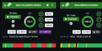
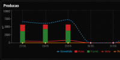

Produção
A máquina pode ficar parada por minutos ou horas sem que o problema seja visto rapidamente.
Sensoriamento + Apontamento Digital
Com o sensoriamento e o apontamento digital da MESTTI, sua indústria coleta dados reais da produção, entende os motivos das paradas e toma decisões com mais segurança.
Pare de descobrir problemas só no fim do turno. Veja o que está acontecendo na produção enquanto ainda dá tempo de agir.

O problema real
Em muitas indústrias, a produção ainda depende de papel, planilhas ou apontamentos feitos no fim do turno. Na prática, isso cria uma rotina perigosa:
Quando a fábrica não mede em tempo real, ela decide no escuro.
Consequências
Se a informação chega tarde, a ação também chega tarde.
A máquina pode ficar parada por minutos ou horas sem que o problema seja visto rapidamente.
O planejamento perde precisão porque a produção real não acompanha o que foi programado.
O dono ou gerente decide com base em informações incompletas ou inconsistentes.
Quando tudo depende do apontamento manual, o risco de erro, esquecimento e atraso aumenta.
A fábrica perde produtividade sem saber exatamente onde, quando e por quê.
O que não é medido em tempo real vira perda invisível.
A visão completa
A primeira visão vem da máquina: dados automáticos, objetivos e em tempo real.
A segunda visão vem da operação: motivos, contexto, justificativas e apontamentos feitos pela equipe.
Parte 1
A MESTTI conecta sensores às máquinas para coletar informações da produção automaticamente, reduzindo a dependência de apontamentos manuais.
Com o sensoriamento, sua indústria passa a acompanhar informações como máquina rodando, máquina parada, quantidade produzida, ciclos, tempo produtivo e disponibilidade.
Em vez de esperar alguém preencher uma planilha, a própria máquina começa a gerar dados para a gestão.

O sensor transforma o funcionamento da máquina em informação para a gestão.
Na prática
Essas respostas não deveriam depender de memória, papel ou achismo. Elas precisam estar disponíveis para o gestor no momento certo.
Parte 2
Nem toda informação vem da máquina. Algumas informações precisam ser registradas pela equipe de forma simples, rápida e padronizada.
O sensor mostra que a máquina parou. O apontamento digital mostra o motivo da parada.
O sensor mostra que houve produção. O apontamento digital conecta essa produção à ordem, produto, operador e justificativas da rotina.

O apontamento digital transforma o conhecimento da operação em dado organizado.
Juntos
Separados, eles ajudam. Juntos, eles dão uma visão completa.
A fábrica depende apenas do que alguém lembra ou preenche.
Você sabe que a máquina parou, mas pode não saber exatamente o motivo.
Você sabe quando parou, por quanto tempo, em qual máquina, com qual operador, em qual ordem e por qual motivo.
A MESTTI une dado automático e apontamento humano para mostrar a realidade da produção com mais clareza.
Para quem é
Se sua indústria produz todos os dias, mas ainda não enxerga a produção com clareza, a MESTTI pode ajudar.
Como funciona
Mapeamos suas máquinas, produtos, turnos, ordens, paradas e principais dificuldades de apontamento.
Os sensores começam a coletar dados da produção automaticamente, sem depender apenas do operador.
Operadores e líderes registram motivos de parada, ordens, produtos e informações importantes da rotina.
Os dados aparecem em dashboards e relatórios para apoiar decisões mais rápidas e confiáveis.
Sem complicação
A MESTTI foi pensada para pequenas e médias indústrias que querem começar a digitalizar a produção de forma simples, prática e acessível.
A proposta é realizar uma implantação prática e pouco invasiva, respeitando a rotina da fábrica.
Sim. O apontamento deve ser simples, rápido e direto, pensado para a realidade do chão de fábrica.
O ERP geralmente organiza dados administrativos. A MESTTI foca na realidade do chão de fábrica: produção, paradas, máquinas, apontamentos e eficiência.
Não. Pequenas e médias indústrias também precisam saber quanto produzem, onde perdem tempo e por que a produção não acompanha o planejado.
Não tem problema. A MESTTI ajuda justamente a criar uma base mais confiável de dados a partir da rotina real da produção.
Próximo passo
Preencha o formulário e vamos entender como sua indústria mede produção hoje, onde estão as perdas de informação e como o sensoriamento com apontamento digital pode trazer mais clareza para sua gestão.
Sem compromisso. A ideia é entender sua realidade e mostrar caminhos práticos para melhorar o controle da produção.